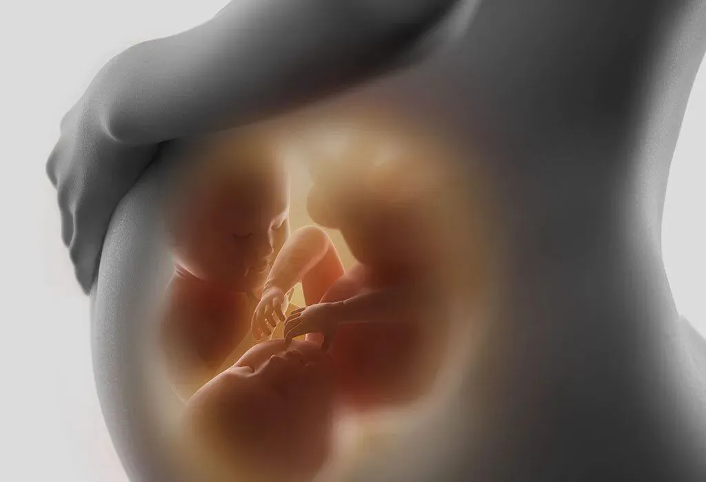
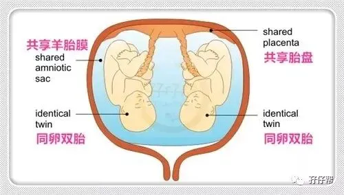
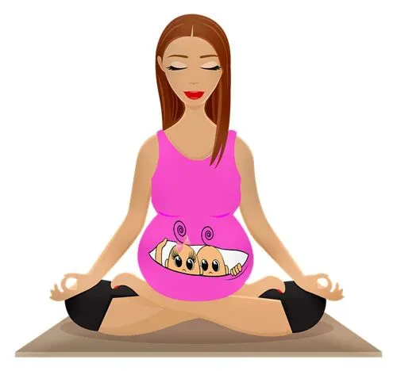

关注我们，全面了解双胞胎育儿知识
文|圆圈妈
网图|侵删
前几期推文《双胞胎输血综合征：对不起妈妈，我偷喝了哥哥的羊水》唤起一群单绒双羊双胎妈妈的回忆杀，纷纷表示：那是段提起来就瑟瑟发抖的灰暗日子， 度秒如年呐！
其他单绒单羊的双胞胎妈妈笑了！
度秒如年算啥！我们的孕期才叫煎熬，好像是被钉在十字架上熬了一个世纪！
如果说怀上双胞胎等于中了500万大奖，那么单绒单羊毛膜双胎妊娠，意味着再来500万大奖！
今天的推文来说说这个特大BOSS：单绒单羊双胎妊娠， 发生率三千万分之一（在发生率最高的地区，每80万次受孕之中才有1例），堪称双胎妊娠界的特等奖！（数据来源于医学界推文《这段双胞胎在妈妈肚子里打架的视频，火了！》）
Q：单绒单羊是啥？
我们经常说的单绒单羊全称单绒毛膜单羊膜囊双胎妊娠，英文名monochorionic monoamniotic，简称MCMA（注意啦，B超单上有“MCMA”字样的提示就是单绒单羊了，可别再抱怨医生啥都没说了！这不白字黑字明写着嘛！）
Q:单绒单羊是如何形成的？
一个受精卵分裂成两个胚胎，倘若胚胎是在9—13天内分裂的，那么就会形成一个绒毛膜，一个羊膜囊腔，共用一个胎盘，如图所示:
相当于两胎儿共处一个单间，且无任何隔断。详情请参考之前的推文:
《官宣：双绒双羊，单绒双羊，单绒单羊傻傻分不清？一篇消除你所有疑问》
《我是双绒双羊，居然是同卵双胞胎》
通常B超单的提示就是：1个孕囊，内可见有两个胎心胎芽，无隔膜。
Q:单绒单羊会翻盘吗？
【翻盘】，这是单绒单羊/单绒双羊双胎群里的姑娘们经常说的词！大概是觉得单绒单羊太危险，若能翻盘成单绒双羊或者双绒双羊可以少操一份心。
也不是不可能！（注意：单绒翻盘双绒，只有一个可能就是误诊）
双胎妊娠指南中提到：
最早孕7周可经阴道超声通过卵黄囊数目来判断单、双羊膜性，但对于MCMA目前认为最佳的诊断时机为孕11~l4周。
意思是，倘若你是在11周之前查B超说是单绒单羊的，那可以祈祷下12周做NT时变成单绒双羊，可能性还是蛮大的！
我在孕8周查出双胎时，B超单上还很保守地提示羊膜囊性待定， 再对比看群里其他孕妈的B超单，基本上孕8周时就把羊膜囊性白字黑字确定下来了！
这就涉及到另外一个可能是，跟医院，医生，检查设备有关，在没看到羊膜囊或不确定的情况下，B超上会提示单绒单羊，或者后面加个问号。
翻盘是个美好的心愿，但有一个真相你得知道下：单绒单羊羡慕单绒双羊是50步笑100步！不管多少只羊都是高危！只是危险的侧重点不一样罢了！
Q:单绒单羊的分娩孕周和方式
双胎妊娠指南里对分娩孕周的规定：
建议单绒毛膜单羊膜囊双胎的分娩孕周为32~34周[34]，也可根据母胎情况适当延迟分娩孕周（推荐等级C）
对分娩方式的建议：
无合并症的单绒毛膜双羊膜囊双胎及双绒毛膜双羊膜囊双胎可以选择阴道试产。单绒毛膜单羊膜囊双胎建议行剖宫产终止妊娠（推荐等级B）
那么实际呢？
根据单绒群里报喜消息的不完全统计，单绒单羊能熬到34周＋，甚至冲破37周的案例还是时有发生的。
这里不是拿个别案例鼓励单绒单羊的孕妈们可以无视医嘱，盲目自信，而是温馨提示：遇到一个对的医生很重要！
当得知怀的是单绒单羊后，下一步不是方寸大乱，而是马不停蹄，赶紧找一个有双胎临床经验丰富的医生全程跟进产检！
这真的很重要！
遇到有些比较保守的医生，可能还不到34周就会把你拉去“处理掉”！（来自单绒群里32周被迫中止妊娠的单绒单羊妈妈无声的呐喊）
当然，更重要的是单绒单羊的准妈妈任何时候都要乐观，先定个小目标，熬到32周，然后争取熬到34周，再加把劲坚持到37周，那就够牛掰了！
Q:单绒单羊与脐带绕颈
当你被确诊单绒单羊时，下一秒你可能会听到这样的声音：
单绒单羊因为中间没有一层膜，两胎儿活动时很容易把两跟脐带缠绕在一起（如文章标题所言，踩到对方的脐带），一旦打结就会血供中断，后果不堪设想。
接着，每次产检都会有医生告知你一些不可预测的可能性，而且都很不中听，甚至让你如临大敌，崩溃大哭。
双胎妊娠指南提到一项研究：
一项回顾性研究对30例MCMA孕妇进行预后分析发现，胎儿总的生存率为60%；10对发生宫内死亡的双胎，有8对为脐带缠绕所致，其中2对发生在孕32周后[44]（证据等级Ⅲ）。
也许你看到这些数字，会心里一凛！完了！
莫慌，这只是数字，跟单绒单羊的你有关，但未必息息相关，不必急着对号入座。
这里总结了顺利卸货的单绒单羊妈妈传授的经验，希望对你有用！（经验分享来源于孖仔帮单绒单羊/单绒双羊微信社群，圆圈妈妈收集整理）
早日摸清胎动规律（虽然比较难），
勤数胎动，
科学做胎教，
注意睡姿，
注意情绪波动不要太大，
加强营养，
减少活动量（包括性生活）
特别注意血压，
有贫血，赶紧纠正
定期产检，
遵医嘱，
必要时加强监测，
什么？这些经验已经老掉牙，还有别的吗？
抱歉，没有！
不过，此处有一段给准爸爸的温馨提示：不管多么日理万机，每次产检都要尽可能陪伴在准妈妈身边，免得她笑着进B超室，哭着出来时，没人安慰。
Q:单绒单羊的亮点
说了那么多，到底单绒单羊有没有一丁点让人能轻松点的理由！
有啊，你看，两小家伙多有爱啊！在里面抢地盘呢！
一段双胞胎小姐妹在妈妈肚子里“打架”的视频
大小宝的“宫斗大戏”
Q：有没有打鸡血的话送给单绒单羊的当事人和家属呢？
有！请记住！
这个世界上，所谓的天生一对从来都不是什么情侣，而是双胞胎！
单绒单羊的双胞胎，天生一对的浓度更加纯粹，无杂质，一层膜都没有！
好有爱！是吧！
所以，一定要努力让Ta们顺利来到自己的身边！
即日起，做个坚强的妈妈，保持好心情，杜绝一切负面信息和情绪垃圾。
著名心理学家伯恩斯写的《伯恩斯新情绪疗法》一书中提到：
人的负面情绪并不来是自于消极事件本身，而是主要来自于我们自己的内心想法。
化验单上那忽上忽下的箭头，B超单上那些陌生的专有名词，只要医生没说啥，那就让其一边去吧！别只盯着坏的，看不见好的！
过多的担心并不能让风险减小，也不能改变妊娠最后的结局，一味地沉浸在未知的恐惧中，反而会把原本很简单的事情复杂化，最终压垮了自己！
如果实在无法控制住自己的负面情绪，总是忍不住胡思乱想，那就先睡一觉吧！
世上没有什么事是睡一觉解决不了的。
这是说给单绒单羊的准妈妈听的，也是说給其他不管是尚在孕期还是已卸货的双胎妈妈听的，包括我自己！
经历了双胎妊娠和养育双胞胎到5岁，我更加坚信：遇到任何困难都尽量想简单点，脑袋里才有空间去想更多有意义的事情，哪怕有一天担心的事情发生了，那就来吧！我准备好了！
有人说，我的娃大了，说这种心灵鸡汤是站着说话不腰疼！
不，我何止腰疼，还天天脑壳疼，一个来自为人母亲的焦虑和担忧，任何时候，本质都是一样的！
不同的是，我懂你的焦虑，你还不懂我的伤悲，大家彼此彼此！
希望这么说，单绒单羊的你会多少有些释然了！
最后，预祝单绒单羊的姑娘们一切顺利，娘仨平安，母婴同室！
-END-
今日互动话题
#你是单绒单羊吗？留言区举个爪哈#
评论区聊一聊呗！
微信公众号：孖仔帮
ID : twinsbang
专注双胞胎孕育，养育，教育经验分享
@www.sgguy.com
扫码关注我们
我知道你在看哟




